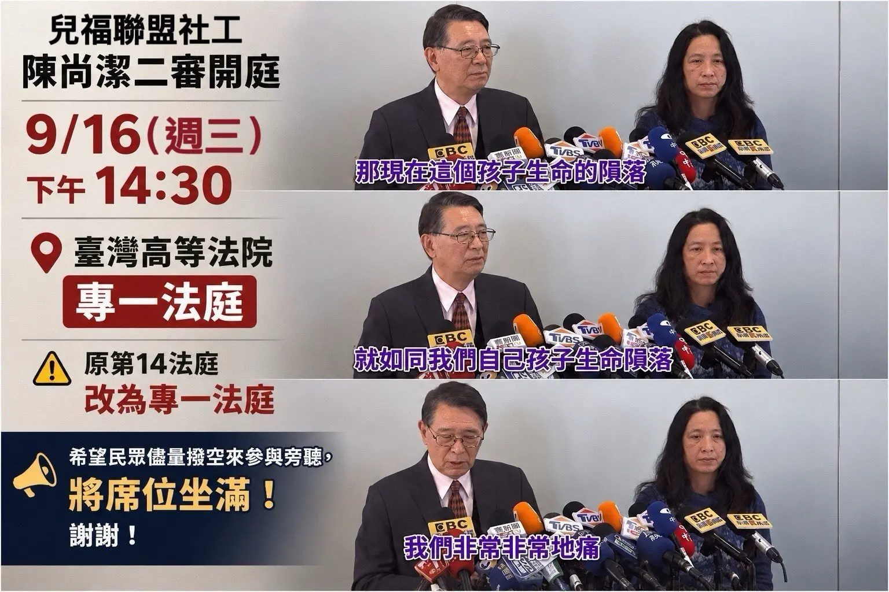

事件を見え続けるものに
9月16日の控訴審準備手続を記憶し、その後の公開手続と裁判結果も継続して追います。


児童福祉連盟は2024年3月の記者会見で、この子どもの命が失われたことは自分たちの子どもの命が失われたように、非常に痛ましいと述べました。
この悲劇を知れば、誰もが深い痛みを覚えるでしょう。陳尚潔ソーシャルワーカーが強い罪悪感を抱いているとの情報も伝えられました。
一方、法廷では陳氏が「どのような責任を負うのか分からない」と繰り返し述べ、起訴内容を争いながら自らの対応を説明しています。その姿勢は「非常に内疚している」との情報との間に大きな隔たりを感じさせます。
子どもの命が失われた後、「非常に痛ましい」という言葉に何が続くべきでしょうか。
カイカイ事件を案じる皆さまに、可能であれば傍聴への参加を呼びかけます。審理を共に見届け、検証されるべき責任が見過ごされないようにしましょう。
手続上の注意：控訴審準備手続は係属中です。起訴内容、答弁、責任の認定は公開の裁判手続と判決に基づきます。今後の変更は裁判所の最新公告と当日の案内をご確認ください。
陳尚潔の過失致死事件の控訴審準備手続が9月16日に開かれるまで1か月を切った8月20日、児童保護行動連盟のメンバーは台北駅で啓発活動を行いました。
悲劇を単なるスローガンにするためではありません。駅を行き交う一人ひとりに、カイカイ事件の司法手続はまだ終わっておらず、児童保護制度の中で機能しなかった部分も、時間とともに忘れられてはならないと伝えるためです。
東1門、北2門、駅前広場、そしてコンコースでメッセージボードを掲げ、事件の概要と連盟の案内をまとめたチラシを示しました。駅の外から大きなコンコースまで、子どもが安全に成長し、必要なときに守られる権利を、都市で最も人の集まる交通拠点に届けました。
この子たちは成長するはずだった。
悲劇をここで止め、すべての子どもが守られるように。
チラシが読まれるのは数分、ボードが旅人の視界に入るのは数秒かもしれません。それでも公共の記憶は、こうした短くも確かな出会いの積み重ねから生まれます。
個別事件の刑事責任は裁判所が判断します。一方、次の子どもを制度の網からこぼさないために、訪問、確認、通報、監督、リスク管理の仕組みを社会が検証し続ける必要があります。
9月16日の控訴審準備手続を記憶し、その後の公開手続と裁判結果も継続して追います。
個人の行為だけでなく、組織の監督、情報共有、リスク対応が実際に機能したのかを問い直します。
公益組織の専門性、透明性、説明責任は、寄付者、家族、社会からの検証に耐えなければなりません。
被害後の責任追及だけでなく、一つひとつの異変を速やかな救援につなげる制度が必要です。
現場のボードについて：写真には、児童福利連盟への寄付や同団体の役割を厳しく問う表現が写っています。これは、本件に関する組織責任、監督体制、社会的信頼への参加者の問題意識を示すものです。本ページは活動現場を記録するものであり、個人の刑事責任や法的評価は、証拠と適正手続に基づいて裁判所が判断するものです。
北2門、東1門、駅前広場からコンコースへ。定点啓発、移動しながらの呼びかけ、配布資料を記録しました。写真を選ぶと拡大表示されます。
メッセージボードを掲げる定点活動と、台北駅周辺を移動しながら行った啓発の様子を2本の短い映像で記録しました。
冷静に関心を寄せ、裁判所の秩序を尊重してください。期日、法廷、傍聴方法に変更がある場合は、裁判所の最新公告と現場案内をご確認ください。
法的手続に関する注記：本件の控訴審準備手続は係属中です。本ページで触れた第一審判決や現場のメッセージは、控訴審準備手続の結論を示すものではありません。最終的には裁判所の公告と裁判書をご確認ください。
記憶し、問い、行動する人がいる限り、子どもの痛みが簡単に置き去りにされることはありません。
私たちは9月16日の控訴審準備手続とその後の裁判を引き続き追い、公開情報を検証しながら整理します。記憶することは悲しみにとどまることではなく、すべての警告に応答し、一人ひとりの子どもをもっと早く守ることです。